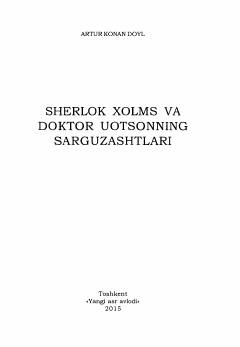

SXSherlok Xolms va doktor Uotsonning eng qiziqarli detektiv sarguzashtlari.
Bu to'plamda Artur Konan Doylning Sherlok Xolms va doktor Uotson ishtirokidagi detektiv hikoya va qissalari jamlangan. Asarda 'Baskervillar iti', 'Raqqos odamchalar' va boshqa mashhur sarguzashtlar o'rin olgan. Kitob 'Yangi asr avlodi' nashriyoti tomonidan 2015-yilda chop etilgan.